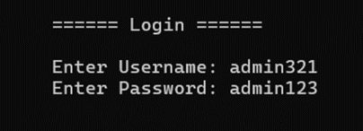
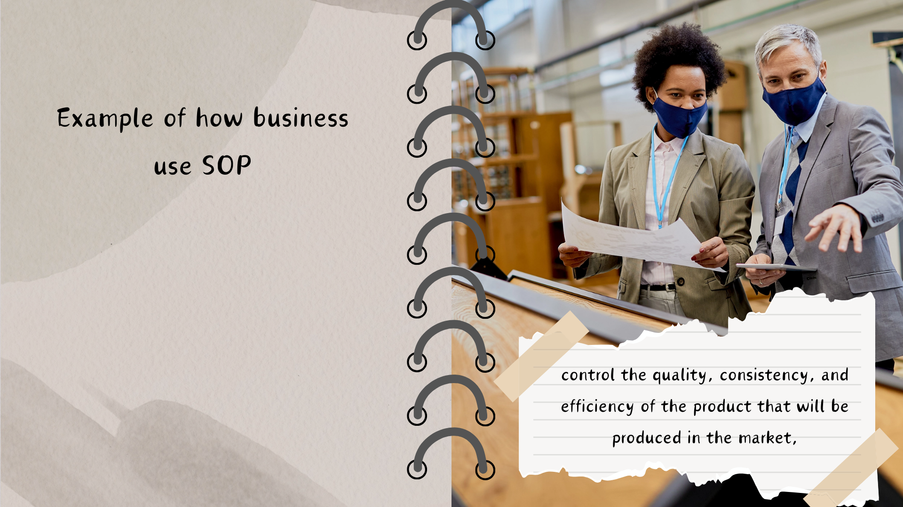
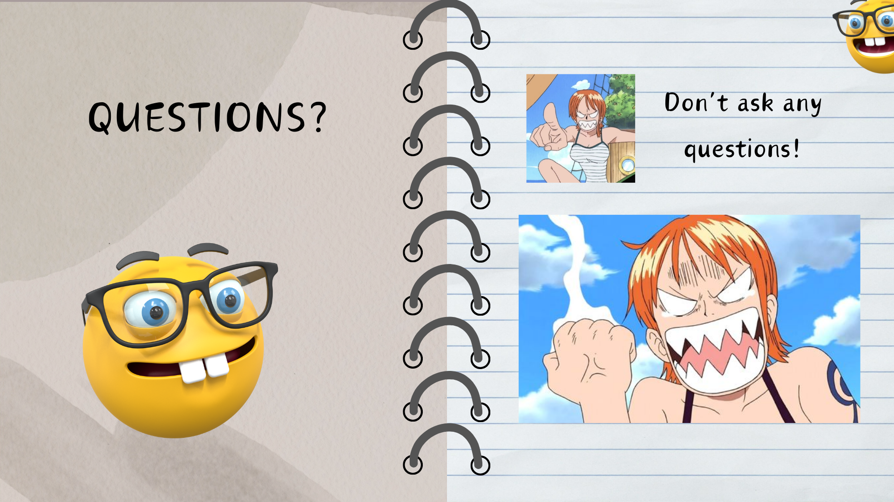
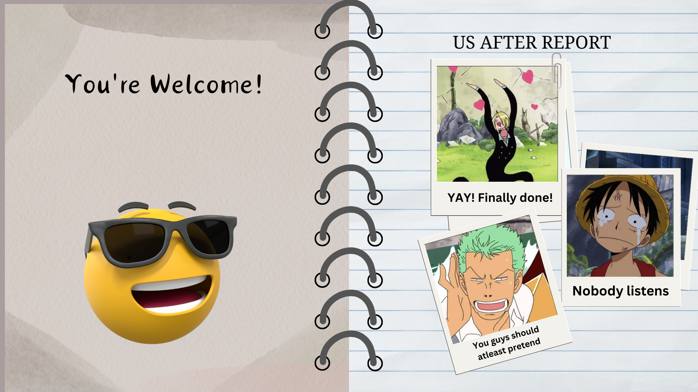
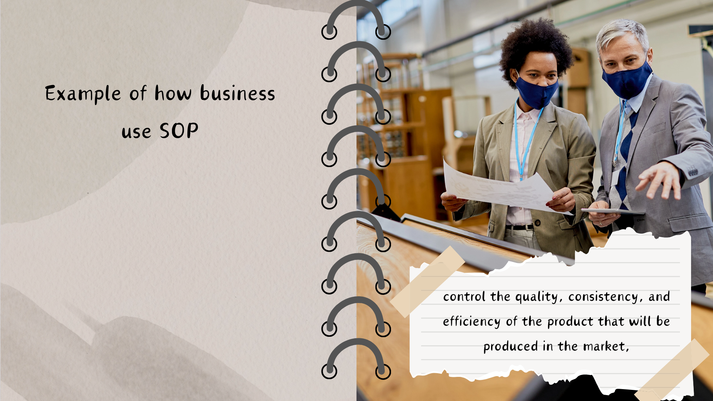
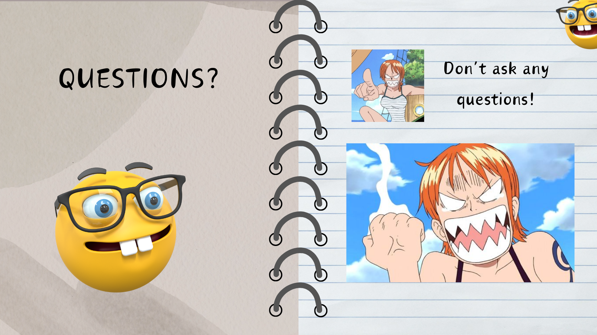
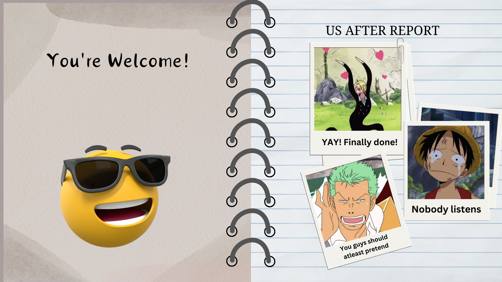

Installation Guide
VirtualBox
Introduction
VirtualBox is a powerful, open-source virtualization software developed by Oracle. It allows users to
create and run virtual machines (VMs) on their physical computer, enabling the simulation of an
entire operating system within a host system. This means that VirtualBox lets you run multiple
operating systems on a single physical computer, providing an isolated environment for testing,
development, and experimentation.
To download VirtualBox, go to the official site
virtualbox.org and download the latest version for windows.
Note: Slide the picture using the cursor or keyboard arrows
Features
Cross-Platform Compatibility:
Multi OS Support - VirtualBox runs on major host operating
systems
including Windows, macOS, Linux, and Oracle Solaris. It also supports a variety of guest
operating systems, including Windows, Linux, Mac OS X, Solaris, and others.
Multiple Virtual Machine Support:
Multiple VMs - You can create and run several virtual
machines (VMs) on a single host. Each VM can have its own operating system, which can be
different from the host OS.
including Windows, macOS, Linux, and Oracle Solaris. It also supports a variety of guest
operating systems, including Windows, Linux, Mac OS X, Solaris, and others.
Snapshots and Clones:
Snapshots VirtualBox - allows you to take snapshots of a virtual
machine
at any point in time. This helps you save the current state of the VM, so you can easily return
to that state later.
Clones - You can clone VMs to create an exact copy, which is useful
for
testing different configurations or setting up similar environments.
Seamless Mode:
Seamless Integration - VirtualBox allows you to run guest applications
seamlessly alongside your host applications. This means the guest OS's applications will appear
as if they are part of the host OS's desktop, creating a more integrated and user-friendly
experience.
Virtual Machine Storage and Disk Control:
Dynamic Virtual Disks - VirtualBox supports
virtual
hard disks (VHD, VDI, VMDK) that grow in size as the VM uses more storage, allowing you to save
disk space.
Fixed Virtual Disks - You can also create fixed-size virtual disks that do not
change size once created.
Troubleshooting
VirtualBox Won't Start:
Cause - Missing dependencies or conflicting software.
Fix -
Disable Hyper-V (Windows) and reinstall VirtualBox. Run as administrator.
VM Won't Boot:
Cause - Incorrect boot order or corrupted VM.
Fix - Check boot
settings (ISO or hard disk), recreate the VM if needed.
VM Performance Issues:
Cause - Insufficient resources.
Fix - Increase RAM and CPU
allocation, enable 3D acceleration.
Network Problems:
Cause - Incorrect network settings.
Fix - Change network adapter
(NAT, Bridged, Host-Only), disable firewall.
VM Crashes:
Cause - Misconfigured VM or insufficient resources.
Fix - Update OS,
review logs, reduce allocated resources.
USB Devices Not Recognized:
Cause - USB controller not enabled.
Fix - Enable USB
controller and
install the VirtualBox Extension Pack.
Guest Additions Won't Install:
Cause - Missing dependencies.
Fix - Install required
packages (Linux), mount the ISO manually.
Conclusion
VirtualBox is a feature-rich and flexible virtualization tool, offering various advanced capabilities like snapshots, seamless mode, resource management, and network customization. Whether you are a developer, tester, or just someone wanting to run different operating systems on your computer, VirtualBox provides all the necessary features to create, manage, and run virtual machines efficiently.
White Paper
Datacrypt: Aglayan Safeguarding System
Introduction
Data is very essential in today's day age since people gather data to help with decisions, understand the world, identify trends, make predictions. As there are countless merit to data, there are also downsides of it. When certain data are easily accessed by unauthorized person, data can be a use in malicious intentions; certain data can be used to threaten someone or spread false information on someone and other illegal usage of data. This project aims to protect data by encrypting data with a sophisticated codename and a pin which is only accessible to authorized individuals. To achieve the desired outcome, the project makes use of C programming language techniques and concepts which was previously discussed during 2nd semester. The project uses the concepts arrays, string, file handling and techniques of conditional statement and iterations.
General Objective

The sole objective is to use programming skills and knowledge to safeguard data that can be potential instrument in illegal activities. It includes applying the encryption methods to protect the data, adoption mechanisms in a secure way of adding new information to the systems and making that in a confidential manner of storing information.
The program will address specifically the key function of data safeguarding and it will come with an encryption system to the data using a sophisticated codename as well as a pin code and the capability to add or modify the data, to view the list of data, to update the data, to delete data, and to search of data. These functions help only the authorized personnel to view and process the data while encryption and authentication services deny access of unauthorized individuals.
Functionality
The system is capable of storing and securing data by requiring the exact codename and pin to open all the information that data contains. By using c program techniques and function like iteration, decisions, functions, it will be able to create this program.
There were a handful of parts in the code that could have made improvements and make it more logical. This part was the one allows the user to view all the data within the system with sophisticated codename and pin. In this part it has limitation whereas all the stored data have the same codename and pin, but it would have been better if it has different codename and pin. Additionally, it will be good if there is such function that display a statistical record of the data within and categorized it either it is a male or female. Unfortunately, it could not apply it to the program due to lack of time. Still thankful in spite all the shortcomings because it has done more than what planned initially.
Software and Hardware Used
CodeBlocks: CodeBlocks is a free, open-source Integrated Development Environment
(IDE) designed for C, C++, and Fortran development. It provides a user-friendly
interface for writing, compiling, debugging, and running code.
Computer:
This
program can be opened on any computer that has an installed C compiler application
and has enough storage to hold data. There are no specific hardware devices or specs
that this program requires, as long as the device on hand has a suitable,
compatible, and updated C compiler application.
Conclusion
The DataCrypt system successfully safeguards sensitive data using encryption and authentication, allowing only authorized access to add, view, update, and delete information. Though it has limitations, such as shared codenames and a lack of backup features, the system meets its core objective of protecting data. The project also provided valuable learning experiences in C programming and system development.
Powerpoint Presentation
 




